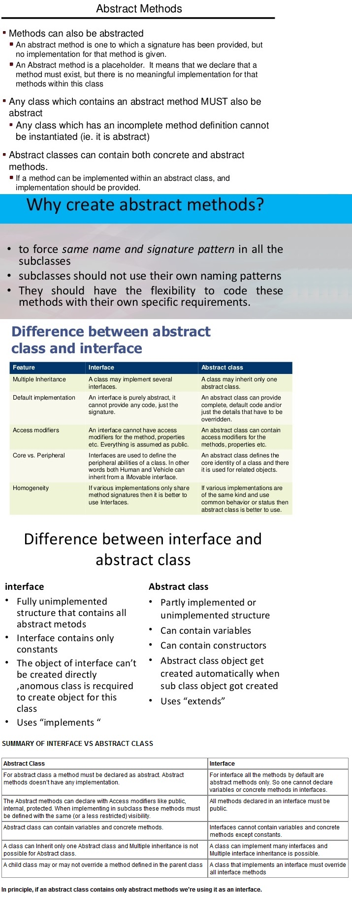

What is packages in java
- packages are collection of related classes. we need to import all created
- packages to access all classes.
- Object is the super class of all classes in java.
- Every class extends from object so class is also called an object.
- Class is user define data types or a blue print or template and it content are the data and the action that perform on data.
- Data is called properties or Attributes in class.
- Action works on data that is also called behaviour or methods.
- We can create the instance of class is called object.
- Inside each class, there are 2 main sections.
First section generally declares all variables, from integers to Strings to Booleans.
Second part is the functions, a class can't do anything without functions. - Classes are blueprint of an object, The an object's functions are limited to the functions defined in the corresponding Class.
- Objects are created based on the class type. objects serve various functions in a program.
- An object has access to all the valid function defined in it's class.
- An object have all the variables declared in the class.
- A Class is the blueprint of an object, while an object is the actual thing created from the class.
- All objects are defined as : = ClassName objName=new ClassName();
- An object will be destroyed if it is no longer refrred to or used in the rest of the program.
- Classes can represent anything. Some obvious examples include Animals, Objects (as in, real life) and Made up things.
- Duck can be a class, Mouse can be a class, Computer can be a class, even Universe can be a class.
- Remember :- Class is a blueprint representation of an object, not the object itself.
-
Class is collection of State & Behaviour
state means properties (class variables)
behaviour means (class functions/methods)
-
What is object Object is a instance of class and object has state and behaviour.
Creating an Object:
In Java, the new key word is used to create new objects.
There are three steps when creating an object from a class:
- Declaration: A variable declaration with a variable name with an object type.
- Instantiation: The 'new' key word is used to create the object.
- Initialization: The 'new' keyword is followed by a call to a constructor. This call initializes the new object.
- Accessing Instance Variables and Methods:
Instance variables and methods are accessed via created objects. -
We can use new operator to create object of class.
We can use newInstance method to create object.
newInstance method() :- to create a object of class runtime/dynamically by passing only class name.
we can't pass arguments to newInstance method(). then we use newInstance method to create object.
newInstance method :- in Java web based application varios servlet are available.Example:- public class Student{ public void show(){} } public class Teacher{ public void show(){} } public Class Test { public void main(String[] args) { Object cls=Class.forName(args[0]).newInstance(); System.out.println("Object created for "+o.getClass().getName()); } } Output: javac test.java; java test Student; java test Teacher;
Web container / servlet container / servlet engine responsible to create the servlet object runtime.
whenever the request comes from browser then web container used newInstance() method internally to create the servlet object.
-
Conclusion : -
- Classes are blueprints of an object, not the object itself.
- An object can do what the class is defined to do.
- A class can be a representation of anything in real life.
- Function are a group of code to accomplish a specific task.
-
Instance Variables : - Instance variables are variables within a class but outside any method.
These variables are initialized when the class is instantiated.
Instance variables can be accessed from inside any method, constructor or blocks of that particular class.
Instance variables have default values.
For numbers the default value is 0, for Booleans it is false and for object references it is null.
- Object of a class is called instance of the Class.
- The properties of a class or data stored by an object is called instance variables.
- Every object has it's own copy of instance variables.
- Use a constructor to initialize them
- If not initialized then instance variables are given default values by java.
- Instance variable are live as long as the object is alive.
- When objects are no longer used, they are destroyed by a special agent called Garbage Collector.

Local variables: -Variables defined inside methods, constructors or blocks are called local variables.
The variable will be declared and initialized within the method and the variable will be destroyed when the method has completed.
Constructors
- Every class has a constructor.
- If we do not write a constructor for a class the Java compiler builds a default constructor for that class.
- By using new keyword with constructor we create the object.
- The main rule of constructors is that they should have the same name as the class.
- A class can have more than one constructor. Constructor can be (no arguments) or be (with arguments).
-
Polymorphism
- Same reference object but multiple forms is the concept of polymorphism.
- One type of object has many form is called polymorphism.
- When all different classes mapped with one object is called polymorphism.
- usages of parent reference to whole child object is called polymorphism.
-
Polymorphism :- Polymorphism is an important Object oriented concept and Polymorphism in Java has two types: Compile time polymorphism (static binding) and Runtime polymorphism (dynamic binding) polymorphism allows you define one interface and have multiple implementations. It is a feature that allows one interface to be used for a general class of actions. The most common use of polymorphism in OOP occurs when a parent class reference is used to refer to a child class object. Polymorphism in java is a concept by which we can perform a single action by different ways. An important example of polymorphism is how a parent class refers to a child class object. In fact, any object that satisfies more than one IS-A relationship is polymorphic in nature. Polymorphism is an Oops concept which advice use of common interface instead of concrete implementation while writing code.
For example :- Ball class is a super class and that super class
inherited by may classess.
public abstract Class Ball
{
public int size;
public String color;
public int getSize()
{
System.out.println(size);
}
public String getColor()
{
System.out.println(color);
}
}
public class RedBall extends Ball
{
RedBall()
{
size=10;
color="Red";
}
}
public class GreenBall extends Ball
{
GreenBall()
{
size=20;
color="Green";
}
}
public class BlackBall extends Ball
{
BlackBall()
{
size=10;
color="Black";
}
}
public class TestPolymorphism{
public static void main(String[] args)
{
Ball redBall=new RedBall();
Ball greenBall=new GreenBall();
Ball blackBall=new BlackBall();
Ball[] balls=new Ball[3];
balls[0] = new RedBall();
balls[1] = new GreenBall();
balls[2] = new BlackBall();
}
}
- Polymorphism means to process objects differently based on their data type.
- one method can be defined multiple times with different data types.
- Polymorphism could be static and dynamic both.
- Overloading is static polymorphism while
- Overloading in simple words means two methods having same method name but takes different input parameters. This called static because,
which method to be invoked will be decided at the time of compilation - overriding is dynamic polymorphism.
- Overriding means a derived class is implementing a method of its super class.
There are two types of polymorphism in java-
- Runtime polymorhism( Dynamic polymorphism).
- Compile time polymorphism (static polymorphism).
Method overriding is a perfect example of runtime polymorphism
in method overriding both the classes(base class and child class) have same method, compile doesn\92t figure out which method to call at compile-time.
In this case JVM(java virtual machine) decides which method to call at runtime that\92s why it is known as runtime or dynamic polymorphism.
Example :
Method overriding Example
package edu.java.basic;
public class X
{
public void methodA() //Base class method
{
System.out.println ("hello, I'm methodA of class X");
}
}
public class Y extends X
{
public void methodA() //Derived Class method
{
System.out.println ("hello, I'm methodA of class Y");
}
}
public class Z
{
public static void main (String args []) {
X obj1 = new X(); // Reference and object X
X obj2 = new Y(); // X reference but Y object
obj1.methodA();
obj2.methodA();
}
}
Output: -
hello, I'm methodA of class X
hello, I'm methodA of class Y
Method overloading is a perfect example of runtime polymorphism
class can have more than one methods with same name but with different number of arguments or different types of arguments or both.
compiler is able to figure out the method call at compile-time so it known as compile time polymorphism.
Example :
Method overloading Example
package edu.java.basic;
class X
{
void methodA(int num)
{
System.out.println ("methodA:" + num);
}
void methodA(int num1, int num2)
{
System.out.println ("methodA:" + num1 + "," + num2);
}
double methodA(double num) {
System.out.println("methodA:" + num);
return num;
}
}
class Y
{
public static void main (String args [])
{
X Obj = new X();
double result;
Obj.methodA(20);
Obj.methodA(20, 30);
result = Obj.methodA(5.5);
System.out.println("Answer is:" + result);
}
}
Output: -
methodA:20
methodA:20,30
methodA:5.5
Answer is:5.5
Mehod Overloading in Java
- Method overloading also known as static polymorphisim.
- Method overloading also known as compile time polymorphisim.
- Method overloading also known as early binding
Example :
int and double are signatures of following ( max ) function.
Signature shows the return types.
int max(int a,int b)
{
if (a>b)
{
return a;
}
else
{
return b;
}
}
int max(int a,int b,int c)
{
int result=max(a,b);
if (result>c)
{
return result;
}
else
{
return c;
}
}
double max(double a,double b)
{
if (a>b)
{
return a;
}
else
{
return b;
}
}
Method Overriding
- Method Overriding also known as run time polymorphisim.
- Method Overriding also known as dynamic polymorphisim.
- Method Overriding also known as late binding
Inheritance
Inheritance in java :- Inheritance in java is a mechanism in which one object acquires all the properties and behaviors of parent object. The idea behind inheritance in java is that you can create new classes that are built upon existing classes. When you inherit from an existing class, you can reuse methods and fields of parent class, and you can add new methods and fields also. Inheritance represents the IS-A relationship, also known as parent-child relationship. The extends keyword indicates that you are making a new class that derives from an existing class. In the terminology of Java, a class that is inherited is called a super class. The new class is called a subclass. The class which inherits the properties of other is known as subclass (derived class, child class) and the class whose properties are inherited is known as superclass (base class, parent class). Inheritance allows a class to use the properties and methods of another class.

- Inheritance is the mechanism by which an object acquires the some/all properties of another object.
- It supports the concept of hierarchical classification.
- Java Swing and Awt classes represent best examples for inheritance.
- In Inheritance child class extends the all public properties of Parent Class
- The derived class inherits the states and behaviors from the base class.
- The derived class is also called subclass and the base class is also known as super-class.
- The derived class can add its own additional variables and methods.
- These additional variable and methods differentiates the derived class from the base class.
- Inheritance is a compile-time mechanism. A super-class can have any number of subclasses. But a subclass can have only one superclass.
- The superclass and subclass have \93is-a\94 relationship between them.
-
Inheritance :- inheritance is the "is a releationship" , When you create a new class that is based on existing (super) class
and inherite all public (properties, methods) from existing (super) class. extends is keyword which is used for inheritace.
It is a relationship of object of superclass and also relationship of object of subclass -
-
Inheritance : -An important feature of object-oriented programs is inheritance\97the ability to create classes that share the attributes and methods of existing classes.
Inheritance is mainly used for code reusability. -
One of the advantages of Object-Oriented programming language is code reuse.
There are two ways we can do code reuse either by implementation of inheritance (IS-A relationship), or object composition (HAS-A relationship).
-
IS-A Relationship: -In object oriented programming, the concept of IS-A is a totally based on Inheritance,
which can be of two types Class Inheritance or Interface Inheritance. It is just like saying "A is a B type of thing".
For example, Apple is a Fruit, Car is a Vehicle etc. Inheritance is uni-directional. For example House is a Building. But Building is not a House.
It is key point to note that you can easily identify the IS-A relationship. Wherever you see an extends keyword or implements keyword in a class declaration,
then this class is said to have IS-A relationship.
-
HAS-A Relationship: -Composition(HAS-A) simply mean use of instance variables that are references to other objects. For example: Maruti has Engine, or House has Bathroom..
-
Summary : -
IS-A relationship based on Inheritance, which can be of two types Class Inheritance or Interface Inheritance.
Has-a relationship is composition relationship which is productive way of code reuse.
What is inheritance in java : - Classes having common properties that classes called super class
and which classes uses that properties of superclass that classes called sub classes.
sub clasees inherits the common properties from super class (by using extends keyword ) that is called inheritance.
sub class can not access private variables and methods of a superclass. you can only inherit 1 class at a time,
-
Inheritance : -An important feature of object-oriented programs is inheritance\97the ability to create classes that share the attributes and methods of existing classes.
The class which inherits the properties of other is known as subclass (derived class, child class) and
the class whose properties are inherited is known as superclass (base class, parent class).
extends Keyword : - extends is the keyword used to inherit the properties of a class.
Note - A subclass inherits all the members (fields, methods, and nested classes) from its superclass.
Constructors are not members, so they are not inherited by subclasses, but the constructor of the superclass can be invoked from the subclass.
The super keyword : - The super keyword is similar to this keyword following are the scenarios where the super keyword is used.
- It is used to differentiate the members of superclass from the members of subclass, if they have same names.
- It is used to invoke the superclass constructor from subclass.
Inheritance IS-A Relationship : -
\95 IS-A is a way of saying : This object is a type of that object
public class Animal{
}
public class Mammal extends Animal{
}
public class Reptile extends Animal{
}
public class Dog extends Mammal{
}
Now, based on the above example, In Object Oriented terms, the following are true -
\95 Animal is the superclass of Mammal class.
\95 Animal is the superclass of Reptile class.
\95 Mammal and Reptile are subclasses of Animal class.
\95 Dog is the subclass of both Mammal and Animal classes.
Now, if we consider the IS-A relationship, we can say -
\95 Mammal IS-A Animal
\95 Reptile IS-A Animal
\95 Dog IS-A Mammal
\95 Hence : Dog IS-A Animal as well
With use of the extends keyword the subclasses will be able to inherit all the properties of the superclass except for the private properties of the superclass.
We can assure that Mammal is actually an Animal with the use of the instance operator.
Since we have a good understanding of the extends keyword let us look into how the implements keyword is used to get the IS-A relationship.
Generally, the implements keyword is used with classes to inherit the properties of an interface. Interfaces can never be extended by a class.
Example
public interface Animal {
}
public class Mammal implements Animal{
}
public class Dog extends Mammal{
}
Inheritance HAS-A relationship
\95 These relationships are mainly based on the usage. This determines whether a certain class HAS-A certain thing.
This relationship helps to reduce duplication of code as well as bugs.
public class Vehicle{}
public class Speed{}
public class Van extends Vehicle{
private Speed sp;
}
This shows that class Van HAS-A Speed. By having a separate class for Speed, we do not have to put the entire code that belongs to speed inside the Van class.,
which makes it possible to reuse the Speed class in multiple applications.
Example :
Inheritance Example
package edu.java.basic;
// A class to display the attributes of the vehicle
public class Vehicle {
public String color;
private int speed;
private int size;
public int getSize() {
return size;
}
public int getSpeed() {
return speed;
}
public void setSize(int i) {
size = i;
}
public void setSpeed(int i) {
speed = i;
}
}
// A subclass which extends for vehicle
public class Car extends Vehicle {
int CC;
int gears;
int color;
void attributescar() {
// Error due to access violation
// System.out.println("Speed of Car : " + speed);
// Error due to access violation
//System.out.println("Size of Car : " + size);
}
}
public class Test {
public static void main(String args[]) {
Car b1 = new Car();
// the subclass can inherit 'color' member of the superclass
b1.color = "Blue";
b1.setSpeed(200) ;
b1.setSize(22);
b1.CC = 1000;
b1.gears = 5;
// The subclass refers to the members of the superclass
System.out.println("Color of Car : " + b1.color);
System.out.println("Speed of Car : " + b1.getSpeed());
System.out.println("Size of Car : " + b1.getSize());
System.out.println("CC of Car : " + b1.CC);
System.out.println("No of gears of Car : " + b1.gears);
}
}
Output: -
Color of Car : Blue
Speed of Car : 200
Size of Car : 22
CC of Car : 1000
No of gears of Car : 5
Note
- The derived class inherits all the members and methods that are declared as public or protected.
- If declared as private it can not be inherited by the derived classes.
- The private members can be accessed only in its own class.
- The private members can be accessed through getter/setter assessor
- The derived class cannot inherit a member of the base class if the derived class declares another member with the same name.
- super is used to refer immediate parent class instance variable.
- super() is used to invoke immediate parent class constructor.
- super is used to invoke immediate parent class method.
Example :
Inheritance & use of super method Example
package edu.java.basic;
class Boll {
private String color;
private int Size;
private String Uses;
private Double price;
public Boll(String color, int size, String uses, Double price) {
this.color = color;
this.price = price;
this.Size = size;
this.Uses = uses;
}
public String getColor() {
return color;
}
public int getSize() {
return Size;
}
public String getUses() {
return Uses;
}
public Double getPrice() {
return price;
}
public void setPrice(Double price) {
this.price = price;
}
protected void parentProtectedClassMethod()
{
System.out.println("protected method of parent class (Boll)");
}
public void publicparentClassMethod()
{
System.out.println("public method of parent class (Boll)");
}
public final void finalParentClassMethod()
{
System.out.println("final method of parent class (Boll)");
}
public void ParentClassMethod()
{
System.out.println("final method of parent class (Boll)");
}
}
//A subclass which extends for Boll
class BollTypes extends Boll {
private String purpose;
// Parameterized Constructor
public BollTypes(String color, int size, String uses, Double price) {
super(color, size, uses, price); // calling base class (Boll) constructor
}
// Parameterized Constructor
public BollTypes(String color, int size, String uses, Double price, String purpose) {
super(color, size, uses, price); // calling base class (Boll) constructor
this.purpose = purpose;
}
public String getPurpose() {
return purpose;
}
public void baseClassName()
{
super.parentProtectedClassMethod(); // using super keyword accessing the base class protected method.
super.publicparentClassMethod(); // using super keyword accessing the base class public method.
}
// we can not override final method of base class
/*public void finalParentClassMethod()
{
System.out.println("final method of parent class (Boll)");
}
*/
// we can override public method of base class
public void ParentClassMethod()
{
System.out.println("Override method of parent class (Boll)");
}
}
public class InheritanceDemo {
public static void main(String[] args) {
Boll plasticBoll = new BollTypes("Red", 2, "For Children", 50.20);
Boll cricketBoll = new BollTypes("white", 2, "To play Cricket", 200.20);
Boll footBoll = new BollTypes("Black & White", 2, "To play FootBoll", 100.20);
System.out.println("The Boll is " + plasticBoll.getColor() + " Boll and size is " + plasticBoll.getSize()
+ " and useful " + plasticBoll.getUses() + " and Price is " + plasticBoll.getPrice());
System.out.println("The Boll is " + cricketBoll.getColor() + " Boll and size is " + cricketBoll.getSize()
+ " and useful " + cricketBoll.getUses() + " and Price is " + cricketBoll.getPrice());
System.out.println("The Boll is " + footBoll.getColor() + " Boll and size is " + footBoll.getSize()
+ " and useful " + footBoll.getUses() + " and Price is " + footBoll.getPrice());
BollTypes generalBoll = new BollTypes("Red", 2, "For Children", 50.20, " for Enjoyment");
System.out.println("The Boll is " + generalBoll.getColor() + " Boll and size is " + generalBoll.getSize()
+ " and useful " + generalBoll.getUses() + " and Price is " + generalBoll.getPrice()
+ " and The General purpose is " + generalBoll.getPurpose());
generalBoll.baseClassName();
generalBoll.ParentClassMethod();
}
}
Output: -
The Boll is Red Boll and size is 2 and useful For Children and Price is 50.2
The Boll is white Boll and size is 2 and useful To play Cricket and Price is 200.2
The Boll is Black & White Boll and size is 2 and useful To play FootBoll and Price is 100.2
The Boll is Red Boll and size is 2 and useful For Children and Price is 50.2 and The General purpose is for Enjoyment
protected method of parent class (Boll)
public method of parent class (Boll)
Override method of parent class (Boll)
Note
- Using Final with class: We can also prevent inheritance by making a class final.
- When a class is declared as final, its methods also become final.
- An abstract class cannot be declared as final because an abstract class is incomplete and its subclasses need to provide the implementation.
- Using Final with methods: We can prevent a method from being overridden by using the keyword final.
- Single Inheritance
- multilevel inheritance
- multiple inheritance
- hybrid inheritance
- hierarchical inheritance
When a class extends another one class only then we call it a single inheritance.
Example : Single Inheritance example program in Java
package edu.java.basic;
Class A
{
public void methodA()
{
System.out.println("Base class method");
}
}
Class B extends A // Single Inheritance
{
public void methodB()
{
System.out.println("Child class method");
}
public static void main(String args[])
{
B obj = new B();
obj.methodA(); //calling super class method
obj.methodB(); //calling local method
}
}
- A class is Parent/Base Class of B Class
- B Class extends A Class, means B Class inherits all public and protected members of A Class
- B Class is Parent/Base Class of C Class
- C Class extends B Class, means B Class inherits all public and protected members of B Class
- C Class also automatically inherits all public and protected members of A Class.
- because A Class is Grand parent of C Class.
- This is called multilevel Inheritance in java
Example : multilevel Inheritance example program in Java
package edu.java.basic;
class Car{
public Car()
{
System.out.println("Class Car");
}
public void vehicleType()
{
System.out.println("Vehicle Type: Car");
}
}
class Maruti extends Car{
public Maruti()
{
System.out.println("Class Maruti");
}
public void brand()
{
System.out.println("Brand: Maruti");
}
public void speed()
{
System.out.println("Max: 90Kmph");
}
}
public class Maruti800 extends Maruti{
public Maruti800()
{
System.out.println("Maruti Model: 800");
}
public void speed()
{
System.out.println("Max: 80Kmph");
}
public static void main(String args[])
{
Maruti800 obj=new Maruti800();
obj.vehicleType();
obj.brand();
obj.speed();
}
}
Output: -
Class Car
Class Maruti
Maruti Model: 800
Vehicle Type: Car
Brand: Maruti
Max: 80Kmph
java doesn\92t support multiple inheritance. We can achieve it by using interfaces in Java.
Example : multiple inheritance in Java using interfaces
package edu.java.basic;
interface FirstInterface
{
public void firstName();
}
interface SecondInterface
{
public void lastName();
}
class MultipleInheritace implements FirstInterface, SecondInterface
{
public void firstName()
{
System.out.println(" First Name");
}
public void lastName()
{
System.out.println(" Last Name");
}
}
public class MultipleInheritaceDemo{
public static void main(String args[])
{
MultipleInheritace obj=new MultipleInheritace();
obj.firstName();
obj.lastName();
}
}
Output: -
First Name
Last Name
- Suppose there are mulitiple interfaces
- (interface A) , (interface B) , (interface C)
- B interface extends A interface
- C interface extends A interface
- D class implements B,C interfaces
by extending interfaces each other hybrid inheritance is possible in java.
Example : multiple inheritance in Java using interfaces
package edu.java.basic;
interface A
{
public void methodA();
}
interface B extends A
{
public void methodB();
}
interface C extends A
{
public void methodC();
}
class D implements B, C{
@Override
public void methodA() {
System.out.println("MethodA");
}
@Override
public void methodC() {
System.out.println("MethodC");
}
@Override
public void methodB() {
System.out.println("MethodB");
}
}
public class HybridInheritance {
public static void main(String[] args){
D obj1= new D();
obj1.methodA();
obj1.methodB();
obj1.methodC();
}
}
Output: -
MethodA
MethodB
MethodC
When a parent class is extened by number of child classes. it is called Hierarchical Inheritance.
Example : multiple inheritance in Java using interfaces
package edu.java.basic;
class A1
{
public void methodA()
{
System.out.println("method of class A");
}
}
class B1 extends A1 // B1 class extends A1 class and inherits all properties of A1 Class
{
public void methodB()
{
System.out.println("method of class B");
}
}
class C1 extends A1 // C1 class extends A1 class and inherits all properties of A1 Class
{
public void methodC()
{
System.out.println("method of class C");
}
}
class D1 extends A1 // D1 class extends A1 class and inherits all properties of A1 Class
{
public void methodD()
{
System.out.println("method of class D");
}
}
public class HierarchicalInheritance {
public void methodB()
{
System.out.println("method of Main Class B");
}
public static void main(String args[])
{
B1 obj1 = new B1();
C1 obj2 = new C1();
D1 obj3 = new D1();
obj1.methodA();
obj2.methodA();
obj3.methodA();
}
}
Output: -
method of class A
method of class A
method of class A
Mehod nesting in Java
Mehod nesting :- means call a method in another method.
Example : -
int max(int a,int b)
{
if (a>b)
{
return a;
}
else
{
return b;
}
}
void display()
{
return max(2,4);
}
this keyword
this keyword : - this keyword can be used in the method to refer the current object.- you can not use this keyword in static method
- you can call constructor within constructor using this keyword
Example : -
public class student
{
String nme;
int age;
student(int age)
{
this.age=age;
}
student (String nme,int age)
{
this(age);
this.nme=nme;
}
}
Encapsulation
Encapsulation is:
- Binding the data with the code that manipulates it.
- It keeps the data and the code safe from external interference
- The idea of encapsulation is to keep classes separated and prevent them from having tightly coupled with each other.
- A Best of encapsulation is the class of java.util.Hashtable.
User can store data in the form of key/value pair in a Hashtable and can retrieve that data in the various ways.
But the actual implementation like, how and where this data is actually stored, is hidden from the user. -
Encapsulation :- Wrapping data and methods within classes in combination with implementation hiding (through access control) is often called encapsulation. The whole idea behind encapsulation is to hide the implementation details from users. If a data member is private it means it can only be accessed within the same class. No outside class can access private data member (variable) of other class. However if we setup public getter and setter methods to update the private data fields then the outside class can access those private data fields via public methods. This way data can only be accessed by public methods thus making the private fields and their implementation hidden for outside classes. That\92s why encapsulation is known as data hiding.
- The whole idea behind encapsulation is to hide the implementation details from users.
- If a data member is private it means it can only be accessed within the same class.
- No outside class can access private data member (variable) of other class.
- Using public getter and setter methods we update and reads the private data fields
- The outside class can access those private data fields via public methods.
- The private fields and their implementation hidden for outside classes.
- That\92s why encapsulation is known as data hiding.
Example : Encapsulation Demo
package edu.java.basic;
class EncapsulationDemo{
private int ssn;
private String empName;
private int empAge;
//Getter and Setter methods
public int getEmpSSN(){
return ssn;
}
public String getEmpName(){
return empName;
}
public int getEmpAge(){
return empAge;
}
public void setEmpAge(int newValue){
empAge = newValue;
}
public void setEmpName(String newValue){
empName = newValue;
}
public void setEmpSSN(int newValue){
ssn = newValue;
}
}
public class EncapsTest{
public static void main(String args[]){
EncapsulationDemo obj = new EncapsulationDemo();
obj.setEmpName("Mario");
obj.setEmpAge(32);
obj.setEmpSSN(112233);
System.out.println("Employee Name: " + obj.getEmpName());
System.out.println("Employee SSN: " + obj.getEmpSSN());
System.out.println("Employee Age: " + obj.getEmpAge());
}
}
Output: -
Employee Name: Mario
Employee SSN: 112233
Employee Age: 32
- It improves maintainability and flexibility and re-usability
- an object is a black box.
- Objects encapsulate data and implementation details.
- An object exposes its behavior by means of public methods or functions.
Abstract Class
Abstract classes allow us to define a set of standard protocols for programmers to implement in their code. We put the general concept in Abstract class. We can put method definition as well as can define the methods in Abstract class. Abstract classes are used for design patters and it gives guarantee that all subclasses will implement all abstract methods. The method which is only delcared and not defined or not implemented is called abstract method The class which has atleast one abstract method which is called abstract class. we can not create the object of Abstract class. Whenever the sub class extends the abstract class that time you need to define each and every methods which is abstract in abstract class. if you don't define the abstract methods in subclass that times this sub class will become abstract class. if you define the abstract methods in subclass that times this sub class will become concreate class. Abstract class is a concept and it implements in subclass. 
interface :- it is a completely abstract class that defines a protocol for object interactions. 1. you can only declared the methods in interface 2. you can not defined or implements the methos in interface. 3. we can not create the object of Interface. 4. In interface, we can only define (static final ) variables. 5. Interfaces can extend other interfaces. 6. A class can implement any number of interfaces. 7. interfaces allow us to define a set of standard protocols for programmers to implement in their code. 8. We can put only method definition in interfaces. 9. Interfaces are nothing but abstract class types. which can be implement in java class. interfaces are used for dynamic binding.